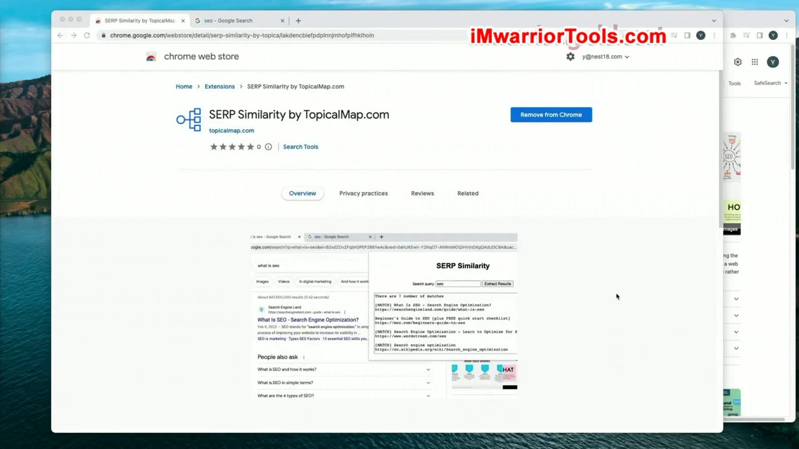
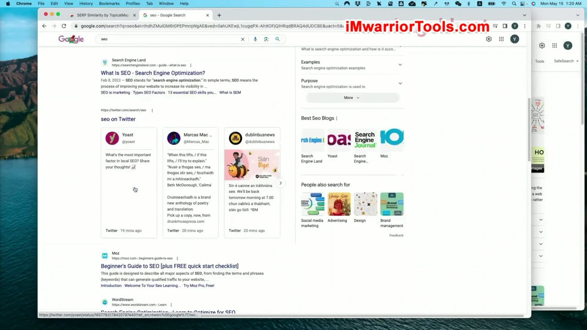
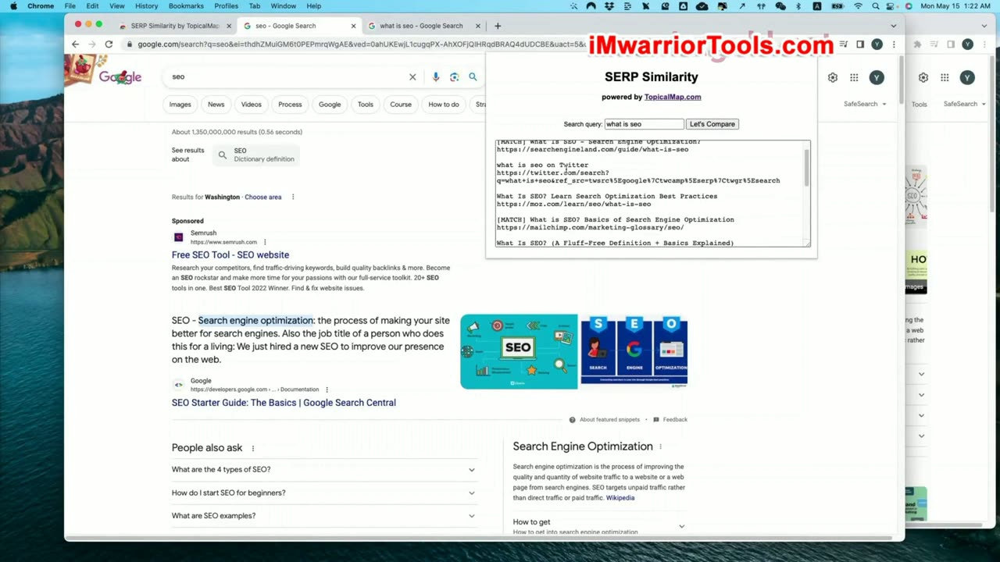
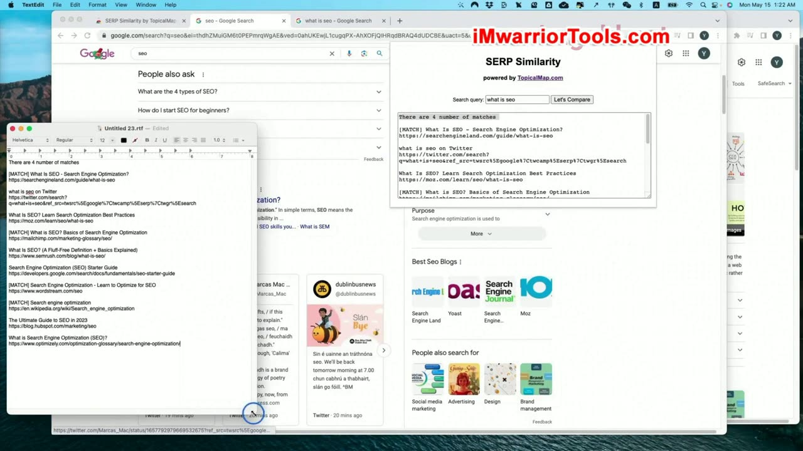
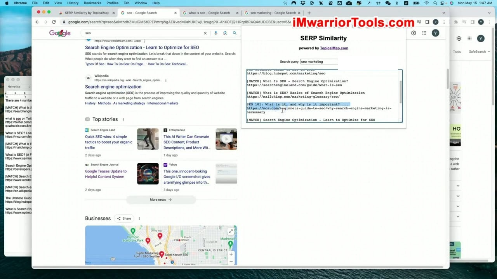

SERP Similarity Tool
1. Mục đích: kiểm tra độ trùng lặp SERP giữa các từ khóa
Trong quá trình nghiên cứu từ khóa và xây dựng bản đồ chủ đề, một thao tác lặp đi lặp lại rất thường xuyên là so sánh kết quả tìm kiếm (SERP) của các từ khóa. Người làm SEO cần xác định xem hai từ khóa đang xét có thuộc về cùng một cụm chủ đề hay không, hoặc nếu chúng thuộc hai cụm khác nhau thì mức độ trùng lặp kết quả xếp hạng giữa chúng là bao nhiêu phần trăm. Điều này giúp ngăn chặn triệt để tình trạng ăn thịt từ khóa (keyword cannibalization) và giúp quyết định chính xác khi nào nên viết một bài bao quát hay tách thành hai bài riêng biệt.
Để đơn giản hóa tối đa quy trình này, Yoyao giới thiệu một tiện ích mở rộng nhỏ gọn dành riêng cho Google Chrome mang tên SERP Similarity (do chính TopicalMap.com phát triển). Tiện ích đi kèm hướng dẫn cài đặt trực tiếp từ Chrome Web Store, và sau khi kích hoạt, biểu tượng của khóa học Topical Maps sẽ hiển thị cố định trên thanh công cụ trình duyệt để sẵn sàng sử dụng.

2. Vấn đề với SERP hiện đại và thao tác thủ công phức tạp
Khi tìm kiếm trên Google hiện nay, trang kết quả đã trở nên phức tạp hơn rất nhiều so với trước đây. Google liên tục bổ sung hàng loạt tính năng SERP phong phú: bảng tri thức (Knowledge Panel), hộp câu hỏi liên quan (People Also Ask), danh sách chủ đề mở rộng và các khối thông tin đa phương tiện. Nếu cài đặt thêm các tiện ích nghiên cứu từ khóa như Ubersuggest hay Keywords Everywhere, thanh bên phải của màn hình sẽ chứa thêm rất nhiều bảng số liệu và biểu đồ thống kê.
Sự xuất hiện dày đặc của các thành phần này cùng với cơ chế cuộn trang vô hạn (continuous scroll) khiến việc xác định chính xác đâu là 10 liên kết tự nhiên (organic blue links) của trang một trở nên khó khăn và mất thời gian. Theo phương pháp truyền thống, người làm SEO phải mở hai cửa sổ trình duyệt song song (ví dụ: một bên tìm kiếm từ khóa "SEO" và một bên tìm kiếm "SEO là gì?"), sau đó đối chiếu thủ công từng liên kết để xem có bao nhiêu URL trùng nhau. Quá trình này rất cồng kềnh khi phải thực hiện trên hàng trăm cụm từ khóa.

3. Cách sử dụng tiện ích SERP Similarity để so sánh tự động
Với tiện ích SERP Similarity, toàn bộ thao tác thủ công được rút gọn chỉ trong vài giây. Khi đang đứng trên trang kết quả tìm kiếm của từ khóa thứ nhất, bạn chỉ cần mở popup của tiện ích, dán từ khóa thứ hai cần đối chiếu vào ô nhập liệu rồi bấm nút Let's Compare.
Ở chế độ nền, tiện ích sẽ tự động mở một tab ngầm để gửi truy vấn tìm kiếm Google cho từ khóa thứ hai và lập tức trích xuất dữ liệu trả về bảng so sánh. Tiện ích liệt kê rõ ràng toàn bộ tiêu đề trang (page titles) cùng địa chỉ URL của tất cả các liên kết tự nhiên tìm được. Nếu một liên kết xuất hiện đồng thời trên cả hai kết quả tìm kiếm, tiện ích sẽ đánh dấu nổi bật trạng thái trùng khớp (Match) và tính toán tổng số lượng URL trùng lặp hiển thị ngay trên đầu bảng.

4. Tự động lưu vào bộ nhớ tạm (Clipboard) và xuất dữ liệu
Một điểm tiện dụng của công cụ là cơ chế tự động đồng bộ vào bộ nhớ tạm (clipboard). Ngay khi bảng so sánh được tạo ra, toàn bộ dữ liệu gồm tiêu đề trang, đường dẫn URL và kết quả so khớp đều đã sẵn sàng trong clipboard. Người dùng chỉ cần mở Google Sheets hoặc tài liệu Word rồi nhấn tổ hợp phím dán (Ctrl+V) là toàn bộ danh sách sẽ được đưa vào bảng tính theo định dạng ngăn nắp.
Dữ liệu này phục vụ đắc lực cho việc so sánh cấu trúc tiêu đề của các đối thủ, tìm ý tưởng triển khai bài viết hoặc lưu trữ hồ sơ bằng chứng khi lập kế hoạch nội dung. Đặc biệt, ngay cả khi người dùng nhấp chuột ra ngoài làm đóng cửa sổ popup của tiện ích, nội dung đã lưu trong bộ nhớ tạm vẫn không hề bị mất, trừ khi người dùng thực hiện lệnh sao chép một đoạn văn bản khác.

5. Ví dụ thực tế với từ khóa SEO Marketing và phân tích cấu trúc
Yoyao thực hiện ví dụ minh họa trực tiếp với cụm từ khóa "SEO Marketing". Tiện ích chạy ngầm rất nhanh và hiển thị 3 kết quả trùng khớp chính xác từ các website uy tín: Search Engine Land, Mailchimp và WordStream. Ông đi sâu phân tích lý do tại sao các trang này có thể xếp hạng đồng thời cho cả hai truy vấn: chúng có cấu trúc bài viết và định hướng nội dung rõ ràng giải thích cặn kẽ mối liên hệ giữa SEO và chiến lược Marketing tổng thể (định nghĩa, các trụ cột và vai trò của tiếp thị tìm kiếm).
Việc kiểm tra trực quan URL và cách đặt tiêu đề trang của các website hàng đầu giúp người học hiểu được bản chất cách Google phân loại mục đích tìm kiếm (search intent). Nhờ đó, người làm SEO có thể thiết lập cấu trúc trang chuẩn xác và đưa ra những quyết định sáng suốt khi xây dựng Topical map. Bài học kết thúc với việc nhấn mạnh tính thực tế, gọn nhẹ và hiệu quả cao của công cụ này trong công việc hằng ngày.

Tài liệu kèm bài: liên kết tiện ích
Tài liệu PDF kèm bài (04-SERP Similarity Tool.pdf) cung cấp đường dẫn cài đặt tiện ích mở rộng: https://go.topicalmap.com/serp-similarity (dẫn tới Chrome Web Store của tiện ích SERP Similarity by TopicalMap.com).
Nguồn và liên kết
- Topical Maps Unlocked 2.0 · SERP Similarity Tool, bài học video và tài liệu PDF cùng tên.